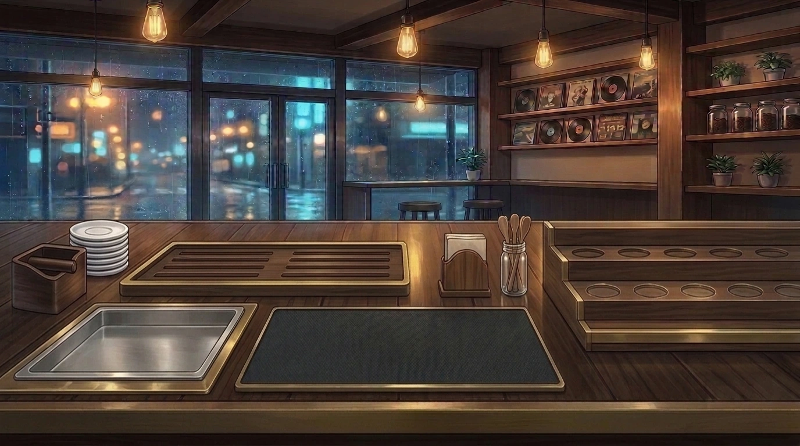
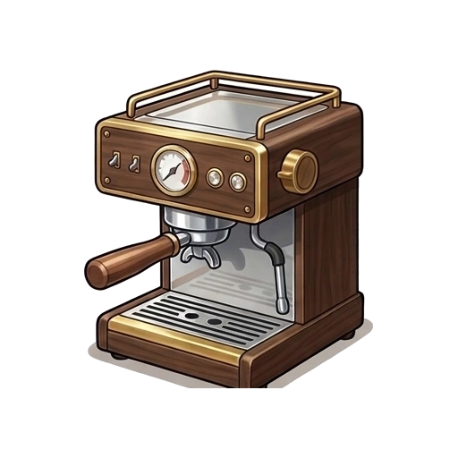

💭 思索点单中
🛎️ 松手奉上特调！
「今天学生会的预算案真是让人头疼……请给我一杯温热的、基底醇厚、带着一抹清雅茶香但绝不甜腻的饮品吧。」
🧾 吧台点单小票
委托：《学生会长的雨夜静心茶》
等待投料
👋 玩法：点击或拖拽桌上的杯子、冰桶、基底茶壶、咖啡机手柄、糖浆按压瓶、拉花缸制作饮品，完成后推给客人！
当前杯中：
暖心·纯享大吉岭红茶
⏱️ 萃取：待冲泡 (+0%)
🎨 拉花：60分
① 咖啡机萃取 & 杯具冰桶工位

☕ 点击/按住萃取
表压 0%
待冲泡
+0%
▼
黄金温区 62%~78%
② 6款精选茶汤与咖啡基底壶 (点击或拖向杯子倾倒)
③ 吧台中央调制杯垫 (可拖入配料 · 拖出杯子递给客人)

♨♨♨
☕
④ 7款糖浆泵瓶与顶料罐 已加 0 / 3 项 (再次点击可移除)